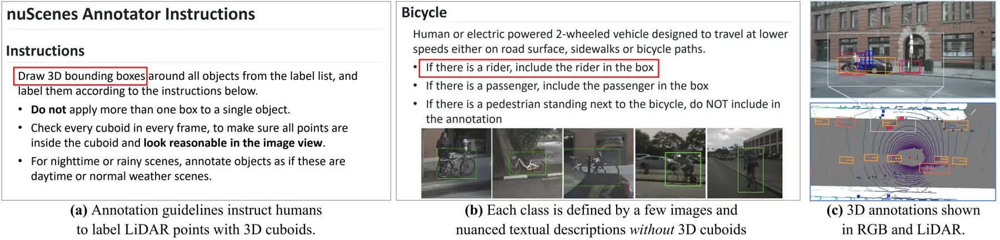
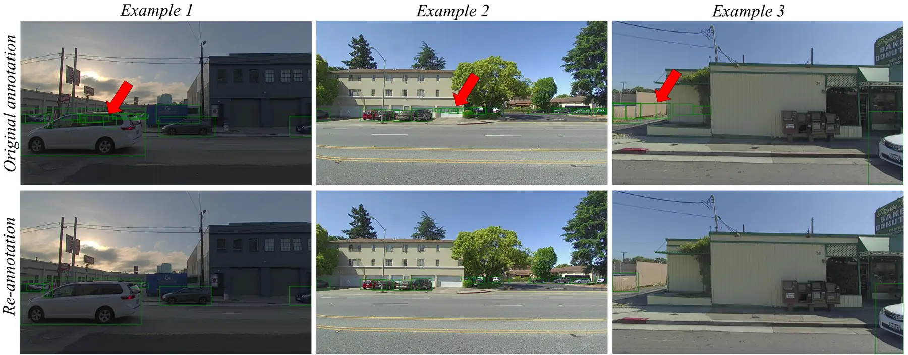
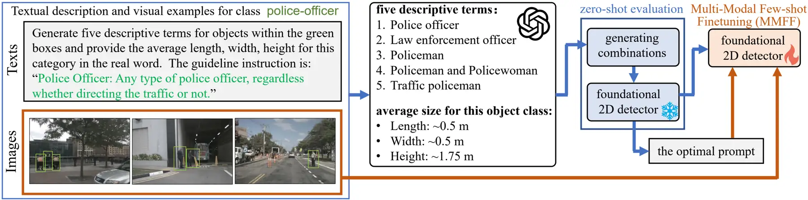
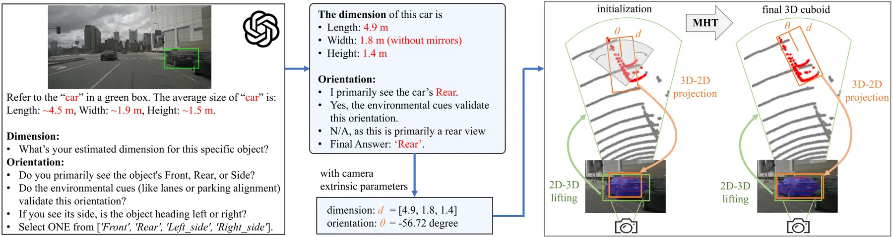
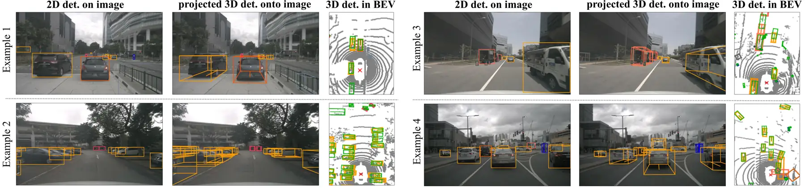

Abstract
The contemporary paradigm of scaling data annotation, crucial for developing machine learning solutions, is to hire ordinary human annotators and instruct them with expert-crafted guidelines to label data. This paradigm is laborious, tedious, and costly, motivating us to study an open problem, auto-annotation with expert-crafted guidelines (dubbed AutoExpert). We develop benchmarks by redesigning the evaluation protocol and re-annotating data with nuScenes and PandaSet, two 3D detection datasets for autonomous driving research that provide expert-crafted annotation guidelines. Their guidelines define 18 and 25 object classes, respectively, using nuanced language descriptions and a few visual examples. Following the guidelines that require using 3D cuboids to label LiDAR data, AutoExpert requires algorithms to learn on few-shot labeled images and texts to perform the task of 3D detection on LiDAR data. Apparently, the challenges of AutoExpert lie in the data-modality and task discrepancy. Nevertheless, public foundation models (FMs) serve as promising tools to tackle these challenges. To address AutoExpert, we adopt a conceptually simple pipeline consisting of three components: (1) 2D object detection and segmentation in RGB images, (2) lifting 2D detections into 3D using known sensor poses, and (3) 3D cuboids generation for the 2D detections. Within this pipeline, we enhance and evaluate a variety of methods such as open-vocabulary detectors, few-shot detectors, and self-supervised learned detectors. We also develop novel techniques, leading to refined components that boost 3D detection mAP from 12.1 to 25.4 on the AutoExpert-nuScenes benchmark.
Benchmarks and protocol
AutoExpert studies auto-annotation from expert-crafted guidelines: algorithms learn textual class definitions and a few federated 2D-labeled RGB examples, then annotate LiDAR data with 3D cuboids. The target classes follow the source annotation guidelines, including rare and nuanced categories.
| AutoExpert-nuScenes | AutoExpert-PandaSet | |
|---|---|---|
| Source dataset | nuScenes | PandaSet |
| Target categories | 18 guideline-defined classes | 25 guideline-defined classes |
| Training supervision | Guideline texts and few-shot, federated 2D annotations | Guideline texts and few-shot, federated 2D annotations |
| Validation | 570 frames from the official training split | 8 re-annotated keyframes |
| Test | 6,019 frames from the official validation split | 192 re-annotated keyframes in the paper's split |
| Annotation basis | nuScenes annotations with the AutoExpert protocol | Our corrected subset: 200 keyframes and 4,695 cuboids in total |
The training examples contain 4–8 selected RGB images per class. Each example is labeled only for its target class. No 3D annotations are used for training; validation annotations support model and prompt selection.

Correcting PandaSet annotations
AutoExpert-PandaSet uses our manually corrected and re-annotated subset. The original PandaSet cuboids include misaligned or ghost boxes whose objects are not identifiable in the RGB views. We re-annotate the selected frames with aligned 3D boxes for visually identifiable objects.

Method: auto3D
Our pipeline adapts available foundation models to expert-crafted guidelines and lifts their 2D predictions into 3D. auto3D denotes the complete method; v-MHT is its VLM-guided cuboid-generation component.
1. Adapt 2D perception
Refine class names with a VLM, select prompts on validation data, and finetune GroundingDINO using few-shot RGB examples. SAM provides object masks.
2. Associate 2D with 3D
Use camera/LiDAR calibration and sensor poses to associate image detections with LiDAR points in their frustums.
3. Generate and refine cuboids
Use instance-specific VLM reasoning and multi-hypothesis testing, followed by sweep aggregation, geometric scoring, and tracking refinement.
Multimodal few-shot finetuning

VLM-guided multi-hypothesis testing (v-MHT)

Contribution of 3D refinement components
| Incremental components | 3D mAP ↑ | NDS ↑ |
|---|---|---|
| CM3D + ft-GD | 18.2 | 23.1 |
| + v-MHT | 21.9 | 25.2 |
| + class-aware sweep aggregation | 22.8 | 25.9 |
| + geometry-aided scoring | 23.6 | 26.4 |
| auto3D: + tracking refinement | 25.4 | 27.2 |
AutoExpert-nuScenes ablation, following the paper. v-MHT reaches 21.9 mAP; the full auto3D system reaches 25.4 mAP after the additional refinements.
Results reported in the paper
3D mAP averages AP at ground-plane center-distance thresholds of 0.5, 1.0, 2.0, and 4.0 meters. Scores below are on a 0–100 scale. ft-GD denotes GroundingDINO finetuned with refined class names and few-shot guideline examples.
AutoExpert-nuScenes · 18 classes
| Method | 3D mAP ↑ | NDS ↑ |
|---|---|---|
| Oyster | 6.3 | 10.7 |
| LISO | 8.9 | 13.1 |
| UNION | 9.7 | 13.8 |
| CPD | 10.1 | 14.2 |
| Find&Prop | 11.3 | 16.0 |
| OpenSight | 11.8 | 16.4 |
| OpenBox | 10.6 | 15.5 |
| AnnofreeOD | 11.7 | 16.2 |
| CM3D | 12.1 | 16.6 |
| CM3D + ft-GD | 18.2 | 23.1 |
| auto3D (ours) | 25.4 | 27.2 |
AutoExpert-PandaSet · our corrected annotations, 25 classes
| Method | 3D mAP ↑ | Adapted NDS ↑ |
|---|---|---|
| OpenBox | 10.9 | 15.0 |
| OpenBox + ft-GD | 15.9 | 18.9 |
| AnnofreeOD | 11.5 | 15.4 |
| AnnofreeOD + ft-GD | 16.1 | 19.3 |
| CM3D | 12.3 | 16.0 |
| CM3D + ft-GD | 16.6 | 19.7 |
| auto3D (ours) | 18.4 | 27.6 |
PandaSet NDS is adapted to use translation, scale, and orientation errors, excluding velocity and attribute errors. NDS values should be interpreted within each dataset's evaluation protocol. The complete paper includes additional enhanced baseline variants.
Qualitative results

CVPR 2026 Workshop Challenge
The Automated 3D Cuboid Annotation on LiDAR Data challenge evaluates AutoExpert-PandaSet using our corrected annotations and ranks entries by NDS. Challenge submissions are separate from the paper's baseline comparisons.
The October 20, 2026 leaderboard snapshot ranks iMerit first, with 23.24 mAP / 29.36 NDS. The organizer entry, listed as AnnoExpert, scores 18.36 mAP / 27.61 NDS; these round to the paper's auto3D PandaSet result of 18.4 / 27.6.
The challenge server displays scores on a 0–1 scale; this page uses 0–100. Visit the live leaderboard for current standings and submission instructions.
Open challenge and leaderboard ↗Code and data
AutoExpert-nuScenes
The repository resource list provides few-shot examples, validation data, finetuned GroundingDINO weights, and saved predictions for the nuScenes workflow.
The repository documents the released scripts and their current coverage; resource availability alone does not establish reproduction of the complete final method.
AutoExpert-PandaSet
- Guideline examples, validation annotations, and test inputs
- LiDAR sequences and sensor data
- Evaluation server and submission format
Consult the dataset card for the current release status and licensing.
Citation
@inproceedings{ma2026autoexpert,
title = {{AutoExpert}: Automating 3D {LiDAR} Annotation from Expert-Crafted Guidelines},
author = {Ma, Yechi and Hua, Wei and Kong, Shu},
booktitle = {Advances in Neural Information Processing Systems},
year = {2026},
url = {https://arxiv.org/abs/2506.02914}
}